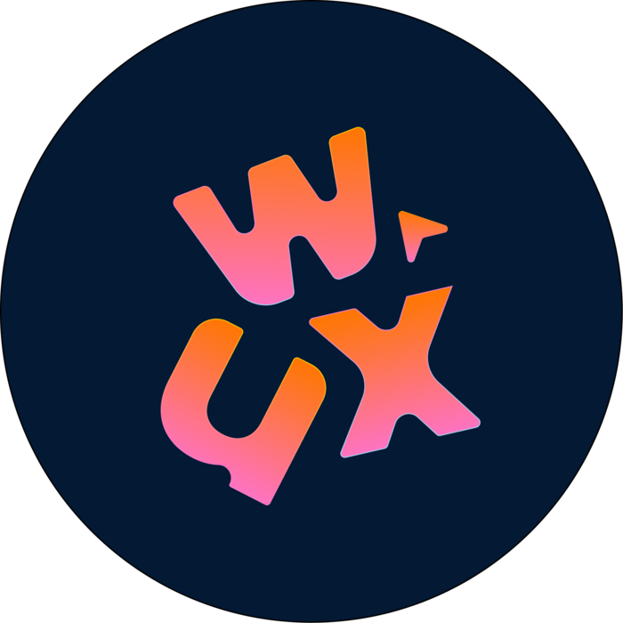
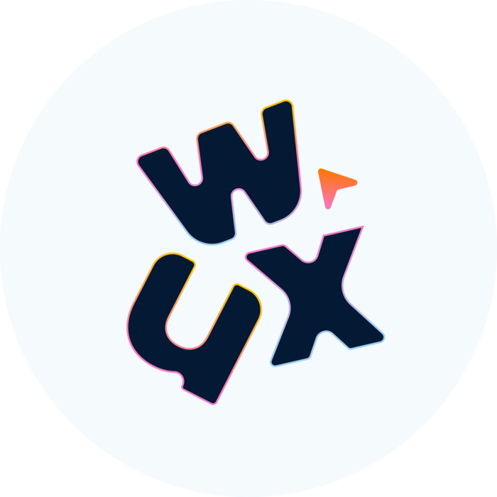
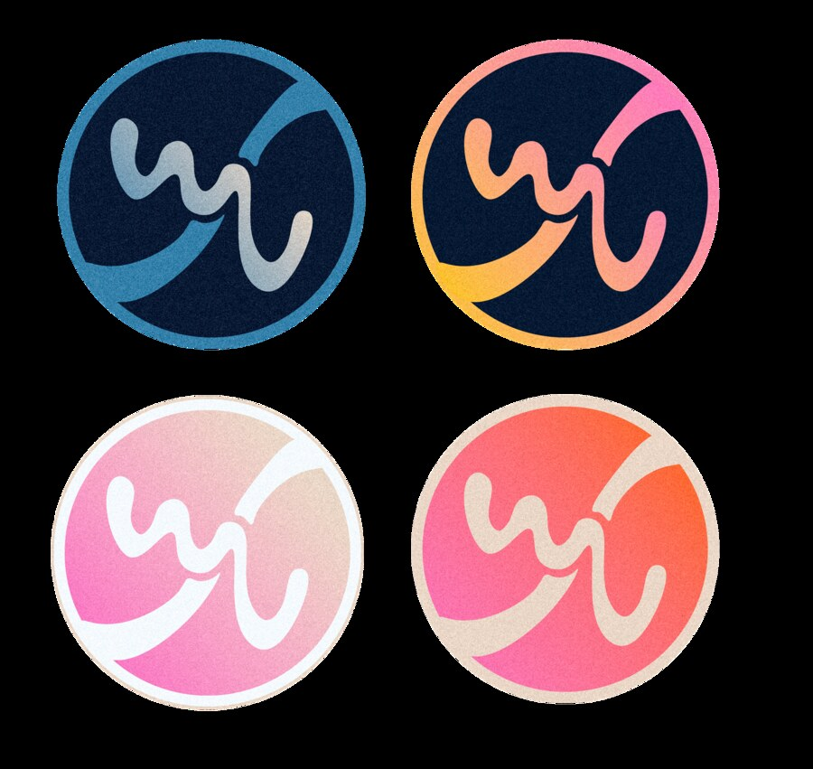
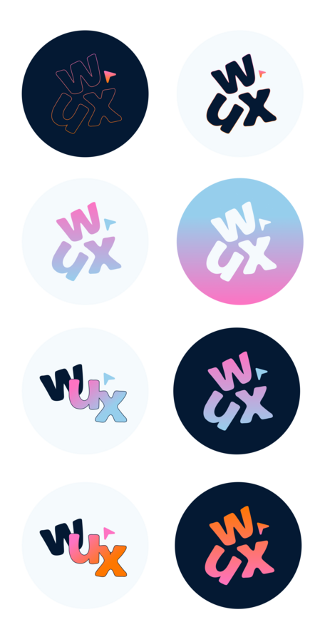
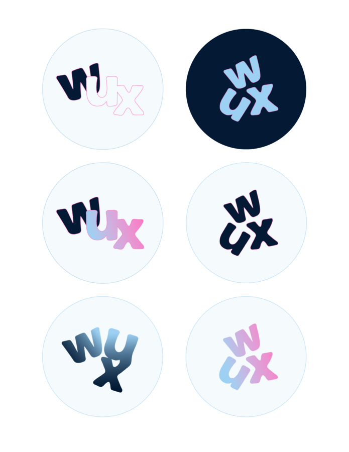

WashUX Rebrand
A new logo and lightweight brand system for WashUX, WashU's student UI/UX design club — built in four weeks to give the club a voice that finally felt as considered as the work its members make.
The Final Rebrand
WUX needed a mark that could hold its own next to every other club logo on campus, while still reading instantly as us: a merge of WashU and UX into one wordmark. The final logo interlocks a bold, hand-inked "W" and "X" around a small "U," with a paper-airplane flag standing in for the club's whole mission — pointing students toward design. It ships in two lockups, a bright gradient version for dark surfaces and a solid navy version for light ones, so it holds up on everything from a Discord icon to a printed poster.


The Rough Start
Before anything went digital, my co-designer and I sat down with pencils and just started drawing "WU" and "X" on top of each other every way we could think of: crossed out like a rejected stamp, tucked inside circles and thought bubbles, stretched into a single continuous zigzag line. Most of these got scrapped fast, but they did their job — they forced us to decide whether the mark should read as a wordmark or as a standalone icon, and whether "U" needed to be visible at all or could stay implied. That question ended up shaping every digital round that followed.

A few things came out of this page specifically: the crossed-out "WU ✕" treatments (top-left) felt too negative for a club logo, even though the X reads clearly. The thought-bubble version (bottom-center) was the first time "WUX" clicked as one word rather than two initials mashed together, and the small "wu +" sketch (bottom-left) is where the flag accent first shows up, tucked next to the wordmark instead of replacing a letter.
The Color System
We built the palette around WashU's own blue rather than away from it, so the club would read as clearly affiliated with the school, then layered in warmer accent colors the university's branding doesn't use, so WUX would still stand apart from every other campus logo built on the same navy. Blues carry structure and credibility; the orange, yellow, pink, and magenta accents carry the energy and playfulness we wanted a student design club to have.
WUX Color Palette
Typography stayed just as simple: Poppins across the board, in four weights (Light, Regular, Medium, Bold), so every touchpoint from a slide deck to a sticker sheet pulls from the same handful of type and color decisions instead of reinventing itself each time.
The Iterative Process
Once the sketches pointed us toward a wordmark, we split the exploration two ways: a monoline, continuous-stroke mark that treated "WUX" as one abstract squiggle, and a bold, letterform-driven wordmark that kept the individual letters legible. We tested both across dark and light backgrounds and a wide color range before picking a direction.
Direction A: The Continuous Line

This direction was seductive because it was so simple to animate — one line, drawn in a single stroke. But in user testing with other club members, almost nobody could read "WUX" in it without being told what it said. A logo that needs a caption to be understood wasn't going to work for a club trying to build name recognition, so we shelved it.
Direction B: The Bold Wordmark

Once we committed to keeping the letters legible, the rounds moved fast: outline versus filled, single color versus gradient, and eventually the little flag mark next to the "W" — first tried as a plain triangle, then angled to feel more like a paper airplane in motion. The gradient-on-navy and solid-on-white pairing (top row) is what eventually became the final lockups.

This second round is where the letterforms actually got fixed: how far the "U" tucks under the "W," how sharply the "X" kicks out to the right, and how thick the outline needed to be to stay legible at favicon size. We also tested a monochrome outline-only version (top-left) as a stamp/watermark variant for merch, which made it into the final system as a secondary mark.
Reflection
-
01
Paper first, always. The fastest way to kill a bad idea for free is to draw it badly by hand before ever opening Figma. Every direction we abandoned digitally had already shown its weaknesses on paper first.
-
02
Legibility beats cleverness. The continuous-line mark was the most technically impressive sketch we made, and it was also the least understandable one. A logo's first job is being read correctly, not being admired.
-
03
Two-person teams move fast, but need a tiebreaker. With just my co-designer and me, we could iterate in hours instead of days — but we also had to agree ahead of time on who made the final call when we disagreed, so no round stalled out.
-
04
A small system still needs rules. Even a lightweight brand system for a student club benefits from documenting exact hex values, type weights, and lockup rules early — it's what let a logo made by two people get used consistently by an entire club afterward.